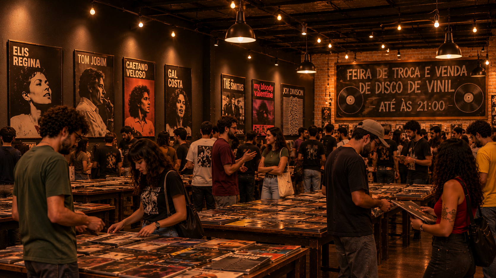
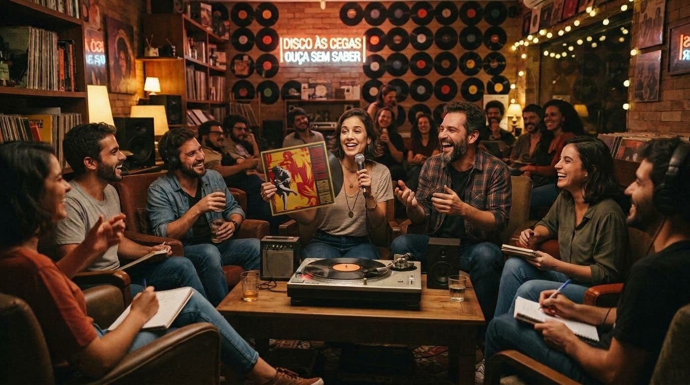
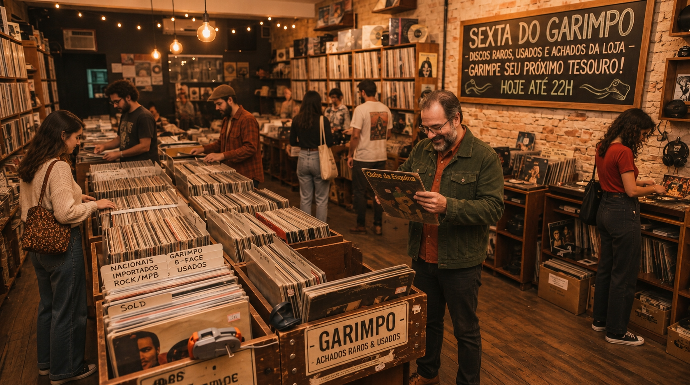
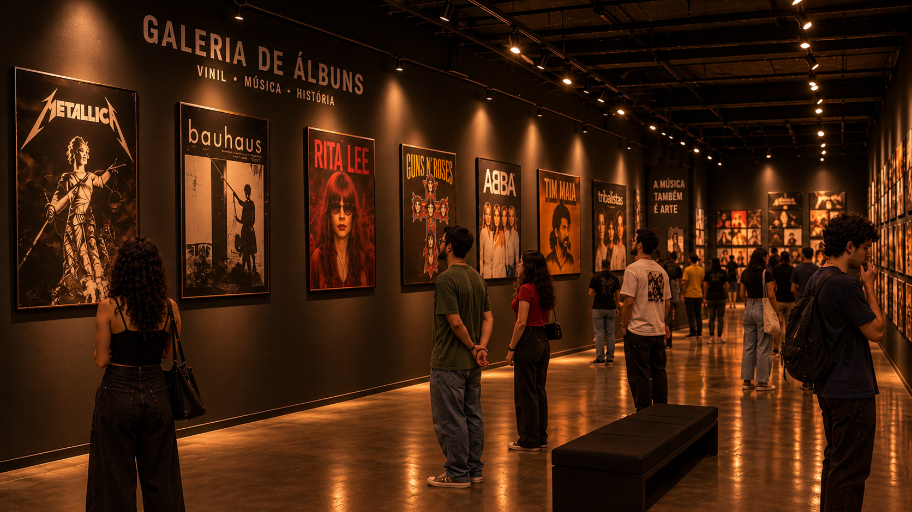
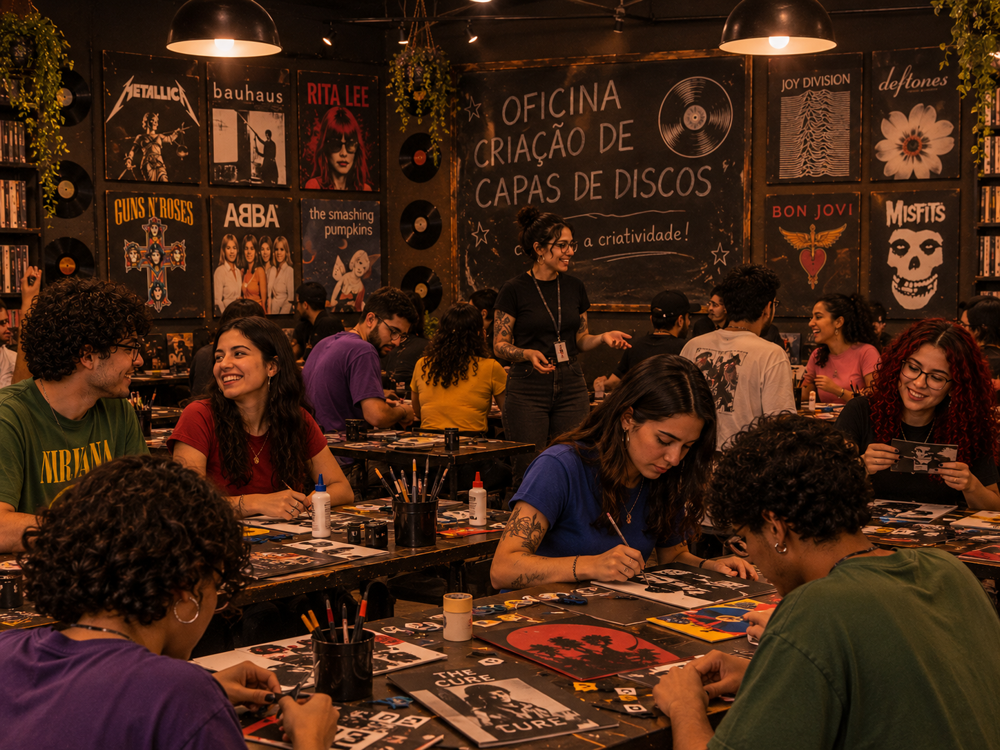
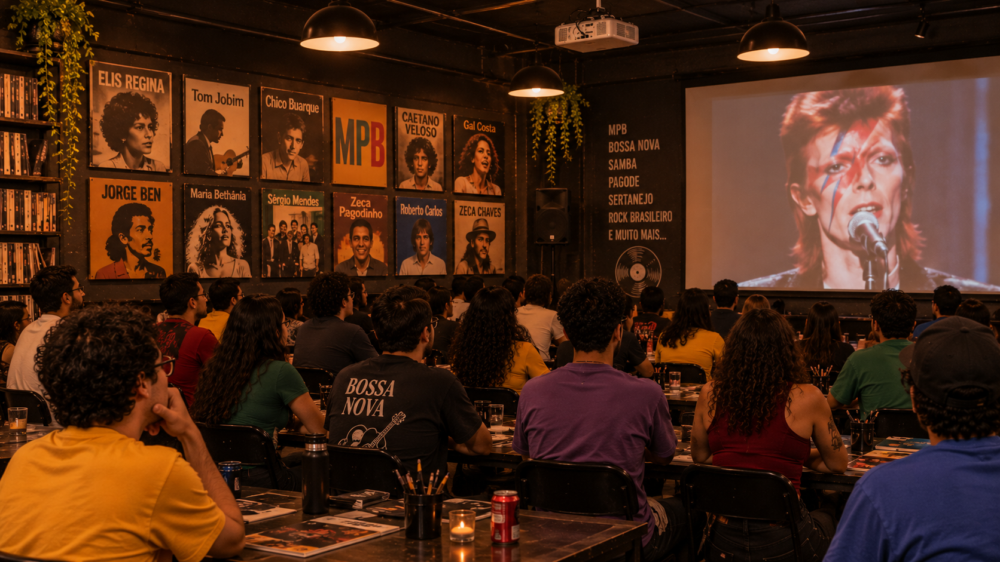

Feira de compra e troca de disco de vinil
Um encontro especial para apaixonados por discos de vinil.
19 NOV
14h às 17h
Ver detalhesA música fica ainda melhor quando compartilhada. Confira nossos próximos encontros, conheça outros colecionadores e participe da comunidade Lado B.

Um encontro especial para apaixonados por discos de vinil.
14h às 17h
Ver detalhes
Descubra novos álbuns e compartilhe sua paixão pela música.
18h às 20h
Ver detalhes
Uma dia para ouvir discos, descobrir artistas e conversar com outras pessoas interessadas no mesmo gosto que você!
15h às 20h
Ver detalhes
Experiencia de exposição de artes das capas de disco e álbuns mais importantes para a história da música e da arte.
17h às 20h
ver detalhes
Crie sua própria capa de disco usando sua criatividade e se inspirando nos seus artistas favoritos, leve para casa sua obra de arte feita no: Lado B.
17h às 19h
ver detalhes
Documentário sobre os álbuns mais icônicos na história da música e sua relevância no cenário atual, seguido de debate com artistas.
16h às 17h
ver detalhesEsta é uma demonstração visual. Sua presença ainda não foi registrada.
Voltar aos eventos19 NOV · 14h às 17h
Traga seus discos para trocar ou vender e garimpe raridades com outros colecionadores. Haverá mesas de expositores e toca-discos para testar os LPs antes de levar.
Inscrever-se29 NOV · 18h às 20h
Ouvimos discos sem revelar o artista nem a capa. Cada um anota suas impressões e, no final, revelamos o álbum e conversamos sobre as descobertas.
Inscrever-se11 DEZ · 15h às 20h
Caixas com discos raros e usados separados especialmente para o dia. Um ótimo momento para descobrir artistas novos e trocar ideias com quem curte o mesmo som.
Inscrever-se18 DEZ · 17h às 20h
Uma galeria com as capas de disco e álbuns mais importantes para a história da música e da arte. Passeie pela exposição e descubra as histórias por trás de cada capa.
Inscrever-se20 DEZ · 17h às 19h
Crie sua própria capa de disco usando sua criatividade e se inspirando nos seus artistas favoritos. Todo o material é fornecido, e você leva para casa sua obra de arte feita no Lado B.
Inscrever-se22 JAN · 16h às 17h
Exibição de um documentário sobre um dos álbuns mais icônicos da história da música, escolhido pelo público, seguida de um debate com artistas sobre sua relevância no cenário atual.
Inscrever-se